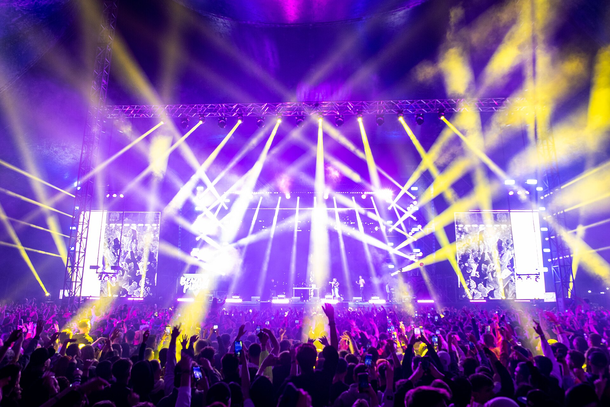
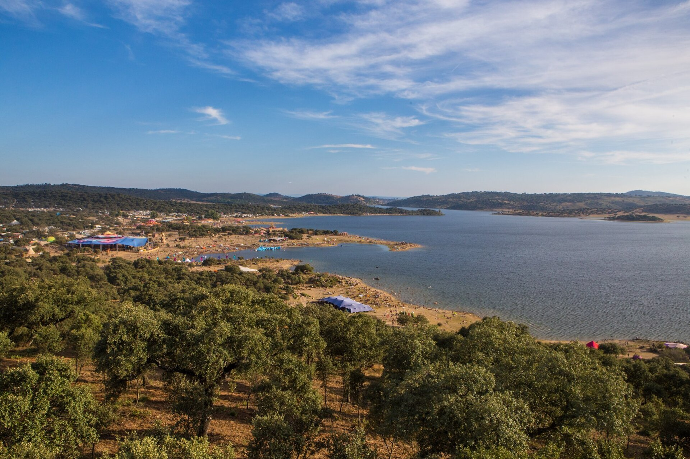
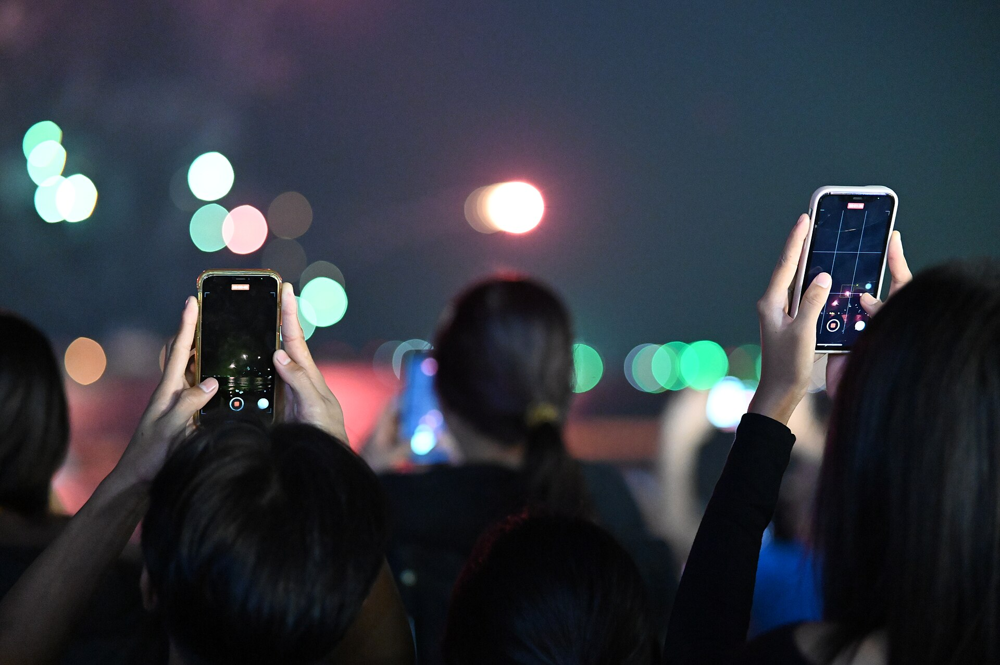

Psyclub vs Progressive · Christmas Edition
Fortaleza, CE · 16:00

Somos um portal dedicado a promover a cultura psicodélica progressiva: eventos, artistas e tudo o que move a pista.
RoleO Natal mais psicodélico de Fortaleza: Psyclub e Progressive juntos numa edição especial, com Gebra, Focus Mind e mais atrações. Patrocínio oficial: Pitú.
Ingressos e informações
A Progressive Psy BR nasceu para dar espaço ao trance progressivo no Brasil. A gente divulga os eventos, apresenta os artistas e conta o que está acontecendo na cena, de Fortaleza para o país.
Mais que uma festa, é uma comunidade de quem vive a pista: produtores, DJs, decoradores e o público que faz tudo acontecer. Everything is progressive.



Parcerias, patrocínio, divulgação de eventos e artistas: o melhor caminho é o Direct.
Everything is progressive
Fotos de referência: palco iluminado, PinkBeachPlanet, CC BY-SA 4.0; Dance Temple, Serialslb, CC BY-SA 3.0; festival à beira do lago, Racheland Deckard, CC BY-SA 4.0; diante do palco, Aurélien Adoue, CC BY 2.0; mixer e público à noite, PattayaPatrol, CC BY-SA 4.0. Via Wikimedia Commons.


.jpg){kind=link}